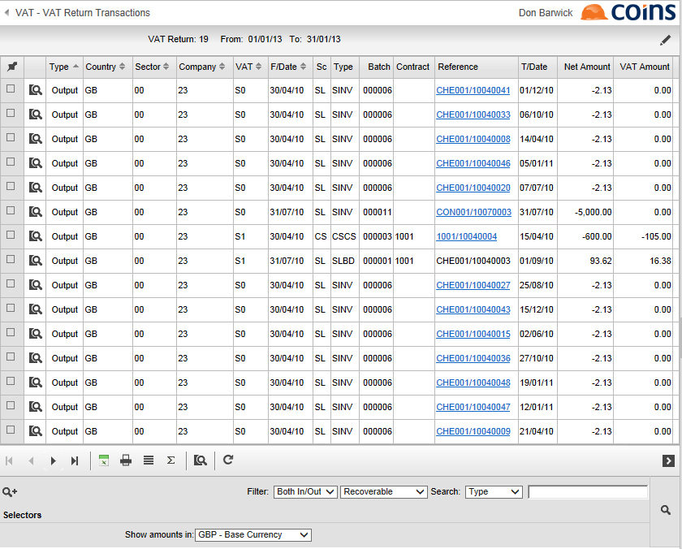

Checking the Return
After the Create Return process has completed, you should check the Return before submitting it.
Review unreturned transactions
The reason for checking the unreturned transactions after the Return has been created is to ensure that the unreturned transactions do not include any which should be included in the Return (for example, transactions entered with an incorrect tax point date; see Tax Point Dates). If there are transactions that should be included, you may need to cancel the Return, reverse out and re-input the affected transactions, and create the Return again.
To review unreturned transactions:
- Go to Returns Workbench.
- Click the Unreturned Transactions tab.

Review transactions included in the Return
As well as checking the unreturned transactions, you should also check the transactions that are included in the Return, to ensure there are no exceptional transactions.
To check transactions in the Return:
- Go to Returns Workbench.
- On the Returns tab, click the link in the Audit column for the Return you want to check.
This shows all the transactions in the Return.

If you prefer, you can review a printed version of the Return:
- Go to Returns Workbench
- On the Returns tab, select the Return you want to check.
- Choose the Return Report action.
Review Return figures
- Go to Returns Workbench
- On the Returns tab, click the
 button next to the Return you want to check.
button next to the Return you want to check.
This shows a summary in the format of a UK Return, so you can see which figures will be returned in each of the nine boxes on the Return. It also shows entries excluded from the Return (for example, non-recoverable ).

Run the Reconciliation Report
At this point you should run the reconciliation report again. This provides a reconciliation between this Return and the General Ledger control accounts, to help ensure the completeness and accuracy of the Return prior to submission to HMRC.
To run the Reconciliation Report:
- Go to Returns Workbench.
- On the Company Summary tab, select the registration you want to reconcile.
- Choose the Reconciliation Report option.
Input any manual adjustments
Normally it should not be necessary to input manual adjustments, as we recommend that all transactions to be included in the Return should be processed as transactions in , using journals if necessary.
However you may need to adjust the Return in the following circumstances:
- When producing the first Return using , to include or exclude transactions to adjust what was returned using the old system.
- To include figures in boxes 2, 8 or 9 which are not part of standard accounting entries, which it may not have been possible to pick up from transactions.
- If processing a group return where the registration group includes entities which are not accounted for on .
To input manual adjustments:
- Go to Returns Workbench.
- On the Returns tab, select the Return you want to adjust.
- Choose the Submit Return Electronically action.
This shows the figures that will be returned, with a column for manual adjustments.

- Input the adjustment figures.
- You should also input a reason for any adjustment, to provide an audit trail. The reason text will not be submitted with the Return.
- Click
 .
.
Note that on saving this record, any adjustments to the Return or other input on this screen will be saved. You will still be able to review the Return figures before submission to HMRC.
- If you are not ready to submit the return immediately, click Cancel Request.